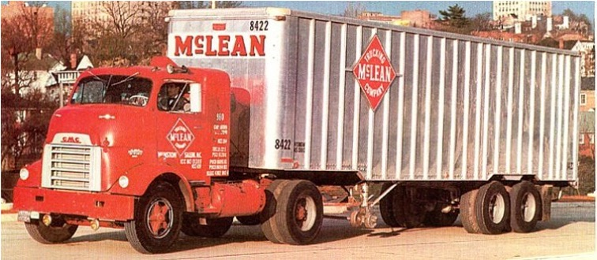

Малкольм Маклин был водителем грузовика, работая в семейной транспортной компании McLean Trucking Co. Как-то, в ожидании своей очереди на разгрузку в порту, ему пришла идея, что грузовики можно грузить на корабль вместе с прицепами. Ведь гораздо проще и быстрее грузить все сразу, с грузовиком без колес. И тогда на одном судне получится разместить сотни трейлеров

В 1934 году он приобрел старый грузовик. Этот было начало основания крупнейшей автотранспортной компании Америки, в состав которой входило 1770 грузовиков и 32 терминала. Уже в 1958 году компания Маклина McLean Trucking заняла лидерскую позицию среди всех транспортных компаний Америки.
Маклин всегда хотел осуществлять перевозки грузов по морю, а уже из каждого порта делать доставку груза автотранспортом до пункта назначения. Он был уверен, что это намного выгоднее, так как позволяет избежать сборов на каждой границе и избежать лишних временных затрат.